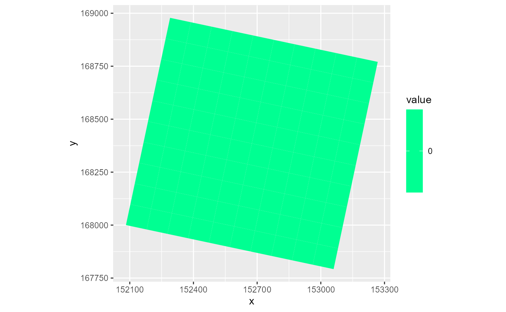
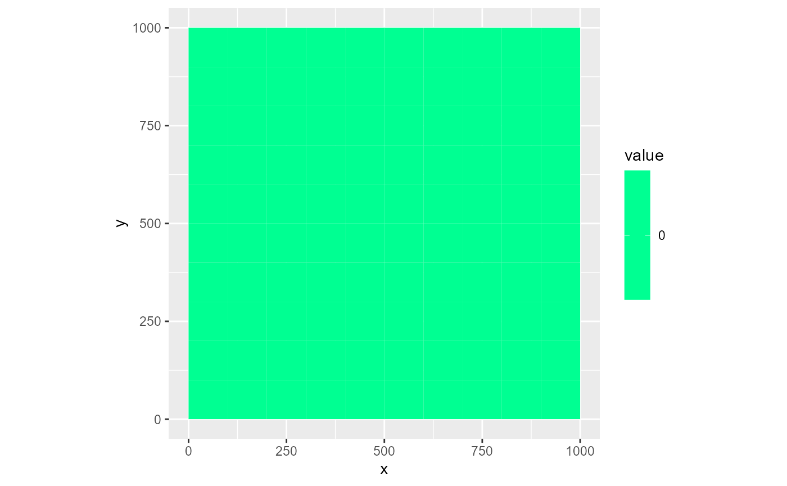
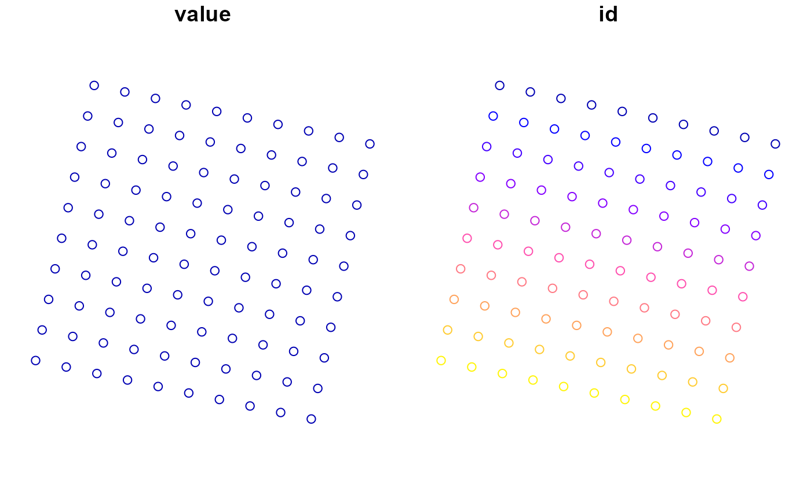
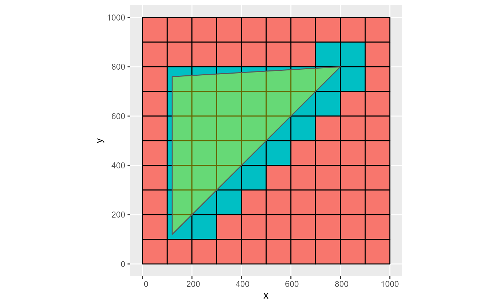
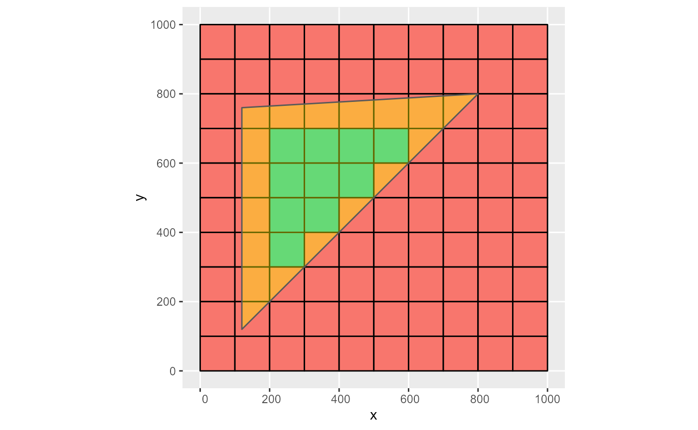
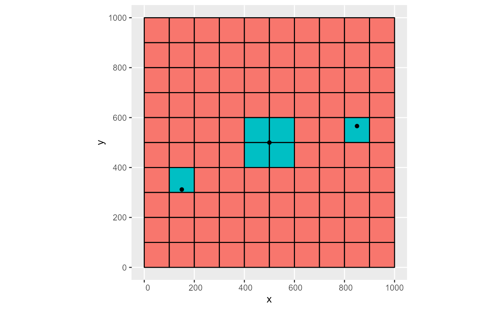

##
! {RMODFLOW} is still in its experimental lifecycle stage.
##
! Use at your own risk, and submit issues here:
##
! <https://github.com/rogiersbart/RMODFLOW/issues>RMODFLOW has several functions to handle conversions from and to spatial objects. Spatial data in MODFLOW comes in two forms, discrete and continuous. This resembles the two major types of geographic data: vector and raster. RMODFLOW supports the conversion from and to sf, stars and raster objects. RMODFLOW uses a prj object to define the origin, rotation and coordinate reference system of the model and uses this object in spatial functions.
If the MODFLOW model represents a real-world area, it can be georeferenced. This is done in RMODFLOW with the prj object. In essence, the prj object is a list with three components:
You can create a prj object from scratch using rmf_create_prj(). It needs three arguments: origin is a numeric vector with the X, Y and Z coordinates of the bottomleft corner. If no Z coordinate is supplied, it is set to zero. The default is c(0, 0, 0). Note that these coordinates should be in length units defined in the crs argument. The second argument is rotation, specifying the rotation angle around the bottomleft corner in degrees counterclockwise. It defaults to 0. The third argument is crs which sets the coordinate reference system. It can take any value supported by sf::st_crs, e.g. EPSG codes, proj4string or WKT formats. If no crs is defined it should be set to NA (the default). In addition to those three arguments, rmf_create_prj() has a ulcoordinate argument which is a logical specifying that the supplied origin vector represents the topleft corner instead of the bottomleft (default is FALSE) and nodecoordinate which if set to TRUE specifies that the supplied origin vector represents the coordinates of the nodal cell center instead of the cell corner as it is by default. Note that if any of these two arguments are set to TRUE, a dis object needs to be supplied as well to convert origin to the bottomleft corner. The resulting origin values in the prj object always represent the bottomleft cell corner of the model.
(prj <- rmf_create_prj(origin = c(152082, 168000.2), rotation = -12, crs = 31370))
#> RMODFLOW Projection object:
#> Origin coordinates (x y z) of the lowerleft corner:
#> 152082 168000.2 0
#> Grid rotation (degrees counterclockwise):
#> -12
#> Coordinate Reference System:
#> EPSG: 31370
#> proj4string: +proj=lcc +lat_0=90 +lon_0=4.36748666666667 +lat_1=51.1666672333333 +lat_2=49.8333339 +x_0=150000.013 +y_0=5400088.438 +ellps=intl +units=m +no_defsThe prj object can be placed in an existing dis object using rmf_set_prj or by supplying prj to a rmf_create_dis call:
dis <- rmf_create_dis(prj = prj)
dis <- rmf_set_prj(dis, prj)
#> Warning: Overwriting existing prj object in dis objectWhenever a prj argument is needed by a RMODFLOW function it is obtained from the dis object (if supplied) using rmf_get_prj:
rmf_plot(dis$top, dis)
Alternatively, you can specify the prj argument directly in these functions:
rmf_plot(dis$top, dis, prj = NULL)
Using this approach, the prj object is part of the dis object and is by default directly obtained in function calls using rmf_get_prj although all those functions allow specifying prj directly as well.
RMODFLOW projection information is written to the header comments of the DIS file when writing a dis object containing prj using rmf_write_dis. The structure of the RMODFLOW projection information is as follows:
#> # Start RMODFLOW projection information
#> # Upper left corner: (152289.911690818, 168978.347600734)
#> # Lower left corner: (152082, 168000.2)
#> # Upper right corner: (153268.059291552, 168770.435909916)
#> # Lower right corner: (153060.147600734, 167792.288309182)
#> # Grid angle (in degrees counterclockwise): -12
#> # Z coordinate lower left corner: 0
#> # epsg: 31370
#> # End RMODFLOW projection informationIf a crs is present, the EPSG, proj4string or WKT information is written (in that order of importance). If no crs is present a proj4string value of NA is written. Alternatively, you can ‘inject’ RMODFLOW style projection information into the header comments of an existing DIS file using rmf_set_prj(file, dis, prj) where file is the path to the DIS file.
When reading in a DIS file, projection information is checked in multiple locations. Firstly, the header comments in the DIS file are checked for RMODFLOW style projection information. If not present, ModelMuse style projection is checked. If that’s also not available, MODFLOW-OWHM style projection information is checked in the first data set of the DIS object. If rmf_read is used to read in an entire model and a usgs.model.reference file is present in the same directory as the NAME file (as should be the case for usgs.reference.model files), the projection information is read from that file using rmf_read_usgs_model_reference() which takes precedence over the other formats.
Most crs formats have length units defined. If they differ from the defined MODFLOW length units (dis$lenuni), RMODFLOW converts the latter on-the-fly whenever a prj is supplied with a crs element that has length units. This conversion is used in e.g. plotting or functions where coordinates are returned:
dis$lenuni <- 1 # ft
rmf_plot(dis$top, dis, prj = prj) # crs in prj is defined in mRMODFLOW provides several S3 functions to convert its base classes (rmf_list and rmf_2d/3d/4d_array) to spatial objects. Conversion can be to sf, stars or raster objects. The latter is only possible for non-rotated regular grids.
Conversion to sf is done with rmf_as_sf which takes as input either an RMODFLOW array or list object, the dis argument and an optional prj object (by default taken from the dis argument). By default it returns polygon geometries representing the grid cells. If the as_points argument is set to TRUE, point geometries are returned representing the cell-centered nodes. In addition to the geometries and values, an id column is returned with either the r based or modflow based array index of the cell/node depending on the id argument (r by default):
rmf_as_sf(dis$top, dis)
#> Simple feature collection with 100 features and 2 fields
#> Geometry type: POLYGON
#> Dimension: XY
#> Bounding box: xmin: 152082 ymin: 167936.8 xmax: 152443.5 ymax: 168298.3
#> Projected CRS: Belge 1972 / Belgian Lambert 72
#> First 10 features:
#> value id geometry
#> 1 0 10 POLYGON ((152082 168000.2, ...
#> 2 0 20 POLYGON ((152111.8 167993.9...
#> 3 0 30 POLYGON ((152141.6 167987.5...
#> 4 0 40 POLYGON ((152171.4 167981.2...
#> 5 0 50 POLYGON ((152201.3 167974.9...
#> 6 0 60 POLYGON ((152231.1 167968.5...
#> 7 0 70 POLYGON ((152260.9 167962.2...
#> 8 0 80 POLYGON ((152290.7 167955.8...
#> 9 0 90 POLYGON ((152320.5 167949.5...
#> 10 0 100 POLYGON ((152350.3 167943.2...
(sf <- rmf_as_sf(dis$top, dis, as_points = TRUE, id = 'modflow'))
#> Simple feature collection with 100 features and 2 fields
#> Geometry type: POINT
#> Dimension: XY
#> Bounding box: xmin: 152100.1 ymin: 167954.9 xmax: 152425.4 ymax: 168280.3
#> Projected CRS: Belge 1972 / Belgian Lambert 72
#> First 10 features:
#> value id geometry
#> 1 0 91 POINT (152100.1 168011.9)
#> 2 0 92 POINT (152129.9 168005.6)
#> 3 0 93 POINT (152159.7 167999.3)
#> 4 0 94 POINT (152189.5 167992.9)
#> 5 0 95 POINT (152219.3 167986.6)
#> 6 0 96 POINT (152249.1 167980.3)
#> 7 0 97 POINT (152279 167973.9)
#> 8 0 98 POINT (152308.8 167967.6)
#> 9 0 99 POINT (152338.6 167961.2)
#> 10 0 100 POINT (152368.4 167954.9)
plot(sf)
At its core, rmf_as_sf first converts to a stars object using rmf_as_stars:
rmf_as_stars(dis$botm, dis)
#> stars object with 3 dimensions and 2 attributes
#> attribute(s):
#> Min. 1st Qu. Median Mean 3rd Qu. Max.
#> value -30 -30.00 -20.0 -20.0 -10.00 -10
#> id 1 75.75 150.5 150.5 225.25 300
#> dimension(s):
#> from to offset delta refsys point
#> x 1 10 152082 29.8139 Belge 1972 / Belgian Lamb... FALSE
#> y 1 10 168000 29.8139 Belge 1972 / Belgian Lamb... FALSE
#> layer 1 3 NA NA NA NA
#> values x/y
#> x NULL [x]
#> y NULL [y]
#> layer layer_1, layer_2, layer_3
#> sheared raster with parameters: 6.33714833612748 -6.33714833612748To convert to raster, use rmf_as_raster which first calls rmf_as_stars and then converts to a raster object. Note that this only works for regular non-rotated rasters:
rmf_as_raster(dis$botm, dis)
#> Error in asMethod(object): only regular rasters can be converted to Raster* objects
rmf_as_raster(dis$top, dis, prj = rmf_create_prj(origin = c(152082, 168000.2), crs = 31370))
#> class : RasterBrick
#> dimensions : 10, 10, 100, 2 (nrow, ncol, ncell, nlayers)
#> resolution : 30.48, 30.48 (x, y)
#> extent : 152082, 152386.8, 168000.2, 168305 (xmin, xmax, ymin, ymax)
#> crs : +proj=lcc +lat_0=90 +lon_0=4.36748666666667 +lat_1=51.1666672333333 +lat_2=49.8333339 +x_0=150000.013 +y_0=5400088.438 +ellps=intl +units=m +no_defs
#> source : memory
#> names : value, id
#> min values : 0, 1
#> max values : 0, 100RMODFLOW can convert sf, stars and raster objects to rmf_list and rmf_2d/3d/4d_array objects using S3 functions rmf_as_list and rmf_as_array.
rmf_as_list.sf uses sf::st_join to find the MODFLOW grid indices corresponding to the sf object. By default, the geometrical operator is set to sf::st_intersects but this can be any kind described in ?sf::st_intersects:
dis <- rmf_create_dis()
# point
pts <- sf::st_sfc(list(sf::st_point(c(150, 312)), sf::st_point(c(500, 500)), sf::st_point(c(850, 566))))
obj <- sf::st_sf(q = c(-500, -400, -300), geom = pts)
# convert to rmf_list
(rlst <- rmf_as_list(obj, dis))
#> RMODFLOW list with 6 features and 1 variable
#> Not representing stress period data
#> i j k q
#> 1 7 2 1 -500
#> 2 6 5 1 -400
#> 3 6 6 1 -400
#> 4 5 5 1 -400
#> 5 5 6 1 -400
#> 6 5 9 1 -300
# polygon
p1 <- rbind(c(120, 120), c(120, 760), c(800, 800), c(120, 120))
pol1 <- sf::st_polygon(list(p1))
obj <- sf::st_sf(head = 15, geom = sf::st_sfc(pol1))
# convert to rmf_list and plot
# op = sf::st_intersects
rmf_as_list(obj, dis) %>%
rmf_plot(dis, k = 1, grid = TRUE) +
ggplot2::geom_sf(data = obj, inherit.aes = FALSE, alpha = 0.4, fill = 'yellow')
#> Coordinate system already present. Adding new coordinate system, which will replace the existing one.
# op = sf::st_covers
rmf_as_list(obj, dis, op = sf::st_covers) %>%
rmf_plot(dis, k = 1, grid = TRUE) +
ggplot2::geom_sf(data = obj, inherit.aes = FALSE, alpha = 0.4, fill = 'yellow')
#> Coordinate system already present. Adding new coordinate system, which will replace the existing one.
Note that when a point geometry is located on the edges of cells, depending on the used operator op, one or more cells might be returned. Although correct topological behaviour, this is not always desirable. E.g. if a well should be attributed to a single cell (unless the discharge is also recalculated):
# 4 cells selected for second point on cell edges
obj <- sf::st_sf(q = c(-500, -400, -300), geom = pts)
rmf_as_list(obj, dis) %>%
rmf_plot( dis, k = 1, grid = TRUE) +
ggplot2::geom_sf(data = obj, inherit.aes = FALSE)
#> Coordinate system already present. Adding new coordinate system, which will replace the existing one.
The user should be aware of this and set op accordingly.
rmf_as_array.sf rasterizes a sf object to a rmf_array using stars::st_rasterize which in turn uses GDALRasterize.
sfc <- sf::st_sfc(list(sf::st_point(c(100,200)), sf::st_point(c(750, 800)), sf::st_point(c(700, 850))))
obj <- sf::st_sf(q = c(-500, -400, -300), geom = sfc)
dis <- rmf_create_dis()
rmf_as_array(obj, dis = dis, select = 'q')
#> RMODFLOW 2d array with 10 rows and 10 columns, representing the i & j dimensions.
#> Not representing stress period data
#> [,1] [,2] [,3] [,4] [,5] [,6] [,7] [,8] [,9] [,10]
#> [1,] 0 0 0 0 0 0 0 0 0 0
#> [2,] 0 0 0 0 0 0 0 -300 0 0
#> [3,] 0 0 0 0 0 0 0 0 0 0
#> [4,] 0 0 0 0 0 0 0 0 0 0
#> [5,] 0 0 0 0 0 0 0 0 0 0
#> [6,] 0 0 0 0 0 0 0 0 0 0
#> [7,] 0 0 0 0 0 0 0 0 0 0
#> [8,] 0 -500 0 0 0 0 0 0 0 0
#> [9,] 0 0 0 0 0 0 0 0 0 0
#> [10,] 0 0 0 0 0 0 0 0 0 0
# add values at same location
rmf_as_array(obj, dis = dis, select = 'q', options = c('MERGE_ALG=ADD'))
#> RMODFLOW 2d array with 10 rows and 10 columns, representing the i & j dimensions.
#> Not representing stress period data
#> [,1] [,2] [,3] [,4] [,5] [,6] [,7] [,8] [,9] [,10]
#> [1,] 0 0 0 0 0 0 0 0 0 0
#> [2,] 0 0 0 0 0 0 0 -700 0 0
#> [3,] 0 0 0 0 0 0 0 0 0 0
#> [4,] 0 0 0 0 0 0 0 0 0 0
#> [5,] 0 0 0 0 0 0 0 0 0 0
#> [6,] 0 0 0 0 0 0 0 0 0 0
#> [7,] 0 0 0 0 0 0 0 0 0 0
#> [8,] 0 -500 0 0 0 0 0 0 0 0
#> [9,] 0 0 0 0 0 0 0 0 0 0
#> [10,] 0 0 0 0 0 0 0 0 0 0As an alternative, you can convert the sf object to a rmf_list and convert the resulting object using rmf_as_array. Results may differ:
# alternative
rmf_as_list(obj, dis = dis, select = 'q') %>%
rmf_as_array(dis = dis)
#> RMODFLOW 2d array with 10 rows and 10 columns, representing the i & j dimensions.
#> Not representing stress period data
#> [,1] [,2] [,3] [,4] [,5] [,6] [,7] [,8] [,9] [,10]
#> [1,] 0 0 0 0 0 0 0 0 0 0
#> [2,] 0 0 0 0 0 0 -300 -700 0 0
#> [3,] 0 0 0 0 0 0 0 -400 0 0
#> [4,] 0 0 0 0 0 0 0 0 0 0
#> [5,] 0 0 0 0 0 0 0 0 0 0
#> [6,] 0 0 0 0 0 0 0 0 0 0
#> [7,] 0 0 0 0 0 0 0 0 0 0
#> [8,] -500 -500 0 0 0 0 0 0 0 0
#> [9,] -500 -500 0 0 0 0 0 0 0 0
#> [10,] 0 0 0 0 0 0 0 0 0 0Converting a stars object to an array uses stars::st_warp if resample = TRUE. This should be used when the dimensions and resolution of the MODFLOW grid and the stars object do not match. The values will be resampled using the specified method. For possible methods, see ?stars::st_warp (default is bilinear interpolation). If the dimensions and resolution do coincide, resample should be set to FALSE which simply sets the values in the rmf_array to those in the stars object. Conversion from raster objects uses the same functions but first converts raster to stars:
r <- rmf_create_array(1:prod(dis$nrow, dis$ncol), dim = c(dis$nrow, dis$ncol))
s <- rmf_as_stars(r, dis = dis)
rmf_as_array(s, dis = dis, resample = FALSE)
#> RMODFLOW 2d array with 10 rows and 10 columns, representing the i & j dimensions.
#> Not representing stress period data
#> [,1] [,2] [,3] [,4] [,5] [,6] [,7] [,8] [,9] [,10]
#> [1,] 1 11 21 31 41 51 61 71 81 91
#> [2,] 2 12 22 32 42 52 62 72 82 92
#> [3,] 3 13 23 33 43 53 63 73 83 93
#> [4,] 4 14 24 34 44 54 64 74 84 94
#> [5,] 5 15 25 35 45 55 65 75 85 95
#> [6,] 6 16 26 36 46 56 66 76 86 96
#> [7,] 7 17 27 37 47 57 67 77 87 97
#> [8,] 8 18 28 38 48 58 68 78 88 98
#> [9,] 9 19 29 39 49 59 69 79 89 99
#> [10,] 10 20 30 40 50 60 70 80 90 100Conversion from stars to rmf_list is intended for stars objects with geometry dimensions (e.g.sf objects) and involves converting the stars object to sf.
These spatial-to-RMODFLOW functions can for example be used in pipelines to create boundary condition packages. Ultimately, these might evolve to functions that are tailored for specific stress packages, e.g. a rmf_build_wel function that creates a wel object directly from a sf input object without the intermediate conversion to rmf_list.
# linestring
s1 <- rbind(c(150,312), c(500, 500), c(850, 566))
ls1 <- sf::st_linestring(s1)
s2 <- rbind(c(100,100), c(500, 555))
ls2 <- sf::st_linestring(s2)
sf::st_sf(conductance = c(500, 1000), stage = c(-5, -2), rbot = c(-6, -5), geom = sf::st_sfc(ls1, ls2)) %>%
rmf_as_list(dis = dis, kper = 1) %>%
rmf_create_riv(dis = dis)
#> RMODFLOW River Package object with:
#> 23 non-parameter river cells
#>
#> RIV fluxes are not saved to a cell-by-cell flow budget file
#>
#> Summary of the first 15 defined river cells:
#> k i j stage conductance rbot parameter name
#> 1 1 7 2 -5 500 -6 FALSE list_1
#> 2 1 7 3 -5 500 -6 FALSE list_1
#> 3 1 7 4 -5 500 -6 FALSE list_1
#> 4 1 6 4 -5 500 -6 FALSE list_1
#> 5 1 6 5 -5 500 -6 FALSE list_1
#> 6 1 6 6 -5 500 -6 FALSE list_1
#> 7 1 5 5 -5 500 -6 FALSE list_1
#> 8 1 5 6 -5 500 -6 FALSE list_1
#> 9 1 5 7 -5 500 -6 FALSE list_1
#> 10 1 5 8 -5 500 -6 FALSE list_1
#> 11 1 5 9 -5 500 -6 FALSE list_1
#> 12 1 10 1 -2 1000 -5 FALSE list_1
#> 13 1 10 2 -2 1000 -5 FALSE list_1
#> 14 1 9 1 -2 1000 -5 FALSE list_1
#> 15 1 9 2 -2 1000 -5 FALSE list_1
#>
#> Summary of the stress-period information:
#> kper list_1
#> 1 1 TRUEThere are several S3 utility functions dealing with the prj object which work on dis and modflow objects. In addition to rmf_get_prj and rmf_set_prj (discussed above), rmf_has_prj returns a logical depending on the presence of a prj object in a dis or modflow object. rmf_transform_prj switches the crs of a prj object, transforms the origin coordinates and returns the supplied prj, dis or modflow argument with these modifications.
prj <- rmf_create_prj(origin = c(152082, 168000.2), rotation = -12, crs = 31370)
dis <- rmf_create_dis(prj = prj)
rmf_has_prj(dis)
#> [1] TRUE
rmf_transform_prj(prj, crs = 3812)
#> RMODFLOW Projection object:
#> Origin coordinates (x y z) of the lowerleft corner:
#> 652081.9 668000.9 0
#> Grid rotation (degrees counterclockwise):
#> -12
#> Coordinate Reference System:
#> EPSG: 3812
#> proj4string: +proj=lcc +lat_0=50.797815 +lon_0=4.35921583333333 +lat_1=49.8333333333333 +lat_2=51.1666666666667 +x_0=649328 +y_0=665262 +ellps=GRS80 +towgs84=0,0,0,0,0,0,0 +units=m +no_defsLastly, the rmf_extent function returns a list with (1) the coordinates of the grid corners as a data.frame and (2) the bounding box of the grid as a sf bbox object:
rmf_extent(dis)
#> $corners
#> x y
#> ll 152082.0 168000.2
#> ul 152289.9 168978.3
#> ur 153268.1 168770.4
#> lr 153060.1 167792.3
#>
#> $bbox
#> xmin ymin xmax ymax
#> 152082.0 167792.3 153268.1 168978.3